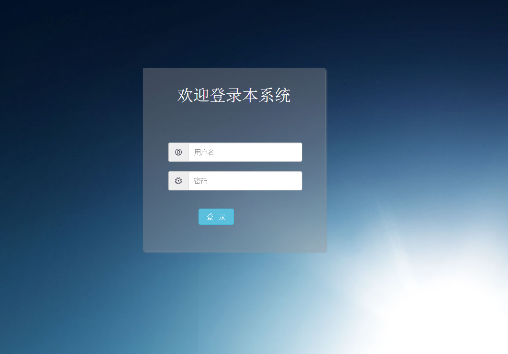
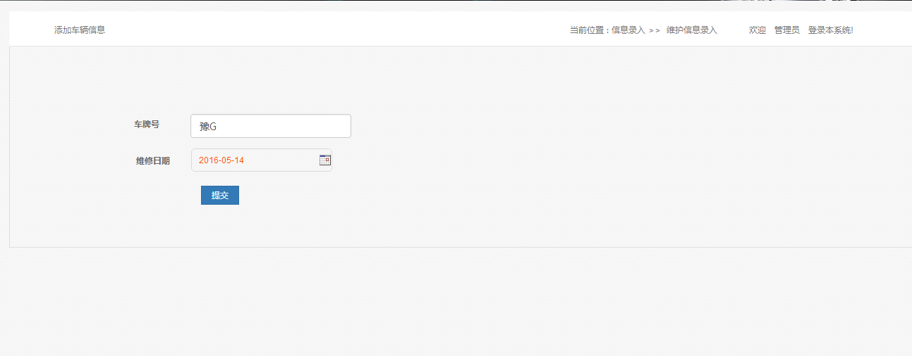
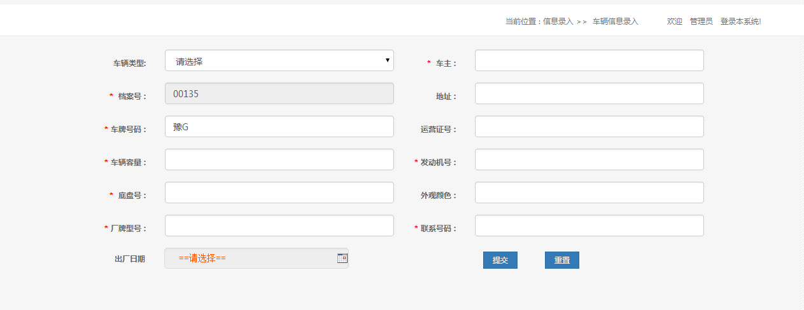
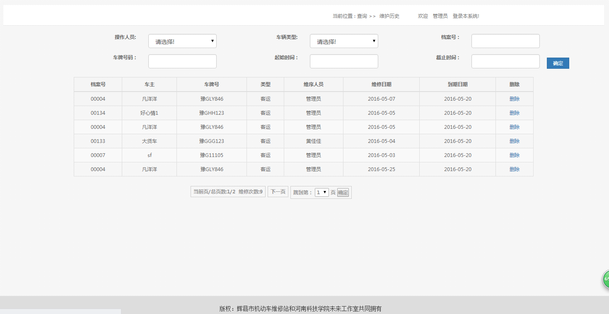
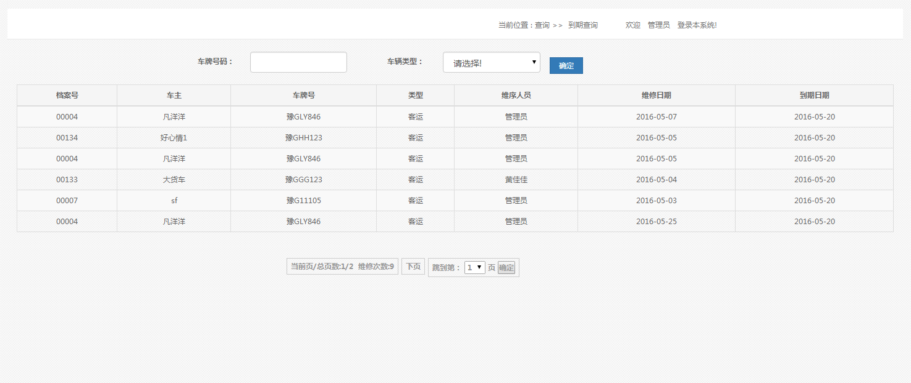
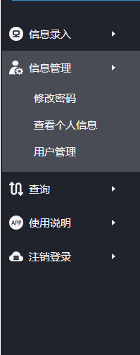

使用说明书
系统说明
1、本产品通过用户对车辆信息的管理,维护历史的查询和用户的管理等操作来实现对车辆进行管理的车辆维护系统
主要功能
1、超级管理员对用户信息的管理（用户对自己的信息管理如修改密码，查看个人信息等）
2、信息录入（车辆信息录入、维护信息录入）
3、查询(查询车辆的维护历史、到期车辆的查询以及车辆查询)
4、注销登陆
相关模块
登录页面

首页

1、维护信息录入页面，在此页面，填写车牌号可以对车辆维护的信息进行录入操作
2、如果没有错存在的车辆则不能提交需先添加车辆信息
车辆信息录入

1、车辆信息录入页面，此页面可以录入车辆的信息
2、车辆的所有信息不能为空
3、把车辆信息添加完之后点击提交车辆信息即被录入
查询
维护历史查询

1、【维护历史查询】在此页面可以查询车辆的维护历史信息
2、可以通过操作人员、档案号、车牌照号、时间段进行条件查询（可以多条件查询可以单条件查询）
到期车辆查询

1、【到期车辆查询】此页面显示到期的车辆信息
2、可以通过车牌号查询过期车辆
信息管理

1、【修改密码】可以修改用的密码
2、【查看个人信息】查看用户的个人信息
3、【用户管理】超级管理员功能普通用户无法操作（对用户进行管理《增加，修改，删除，查询》）
注销登陆
1、用户的注销